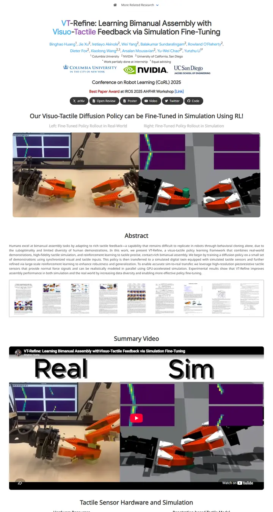

VT-Refine: Learning Bimanual Assembly with Visuo-Tactile Feedback via Simulation Fine-Tuning
混み合っているのに整然とした研究室のポスター。タイトルにはスカイブルーの "Visuo" とバイオレットの "Tactile"、三つの機関ロゴ、赤い受賞の一行、そして実機とシミュレーションを並べた横長の動画の上に暗いピルが六つ。

表示されたページと照合済みです。
選んだ理由
グラデーションのキーワードタイトル、機関ロゴ、密度は高いが整ったボタン列、実機とシミュレーションを並べたティーザーの上に掲げた主張、論文ページのサムネイル列があります。にぎやかですが、洗練されていて枠取りもよくできています。
以下の説明と DESIGN.md 本文は英語です。コーディングエージェントが同じ一つの版を読めるよう、翻訳していません。
概要
カラーパレット
タイポグラフィ
Google Sans 400
VT-Refine: Learning Bimanual Assembly with Visuo-Tactile Feedback via
Abstract · Method · Results · BibTeX — 0123456789
Noto Sans 400
VT-Refine: Learning Bimanual Assembly with Visuo-Tactile Feedback via
Abstract · Method · Results · BibTeX — 0123456789
monospace
VT-Refine: Learning Bimanual Assembly with Visuo-Tactile Feedback via
Abstract · Method · Results · BibTeX — 0123456789
余白と形
ページの構成要素
ガイドライン
似たスタイル

Scaling Text-Rich Image Understanding via Code-Guided Synthetic Multimodal Data Generation
大学出版局のカタログ。スモールキャップスのセリフ体タイトル、標本を並べたカラーホイール、土の色の棒グラフ。

DICE-BENCH: Evaluating the Tool-Use Capabilities of Large Language Models in Multi-Round, Multi-Party Dialogues
ゲームの箱絵をまとった Nerfies ページ。チャコールのサイコロバナーがアイデンティティを刻み、パステルのブランド色のピルとグレーのカルーセル帯が、静かな2カラムの手法解説へと導く。

TUNA: Comprehensive Fine-grained Temporal Understanding Evaluation on Dense Dynamic Videos
スコアボードから始まるベンチマーク。魚のロゴを添えたスモールキャップスのワードマーク、グラデーションの会議名の行、そしてグレーのヘッダーとゼブラ行、青いモデルリンクを持つ全幅のリーダーボード。

Gesturing Toward Abstraction: Multimodal Convention Formation in Collaborative Physical Tasks
きれいな紙に刷ったゼミの配布資料。大きく柔らかな見出し、6つのチャコールのタブ、そしてブロックを説明する手を描いたティールとマゼンタのコマ漫画。

Making Multimodal LLMs Reliable Chart Data Extractors: A Benchmark and Training Framework
いちばん出来のいいページを開いた実験ノート。モニターのベゼルのように縁取られた動画、見出しには絵文字、どの図も柔らかな影をまとってピン留めされている。

What If Moderation Didn't Mean Suppression? A Case for Personalized Content Transformation
書見台に紫のリボンが掛かった静かな閲覧室。スレート色のサンセリフ見出し、Garamondの本文、そして壁に留められた温かな琥珀色のメモが一枚。